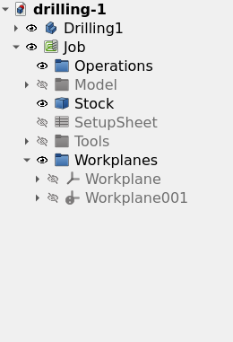
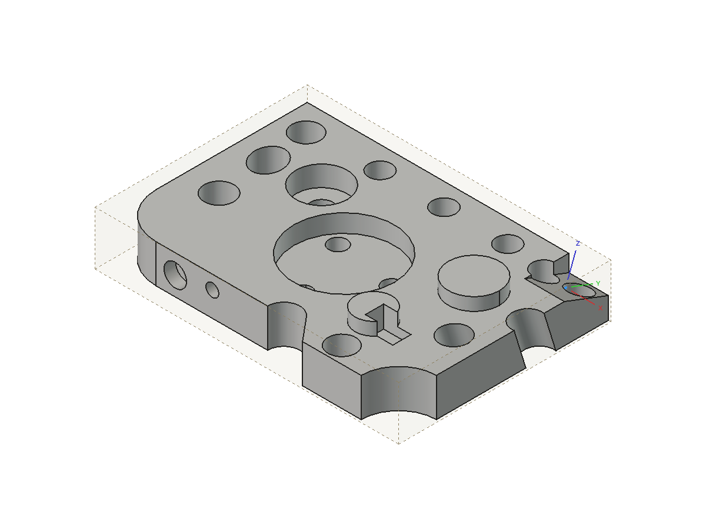
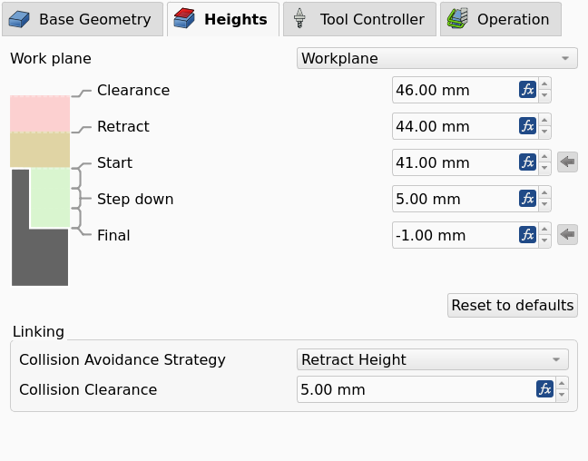
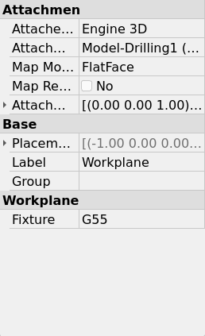

Work Plane
Description
The Work Plane command creates a named Work Plane on a Job.
The command creates the Work Plane from one selected planar face, or at the origin of the Job.
The tooltip of the command is Create a named work plane on the Job, from a selected planar face or at the Job origin. Operations can share one work plane.
A Work Plane is the frame in which an Operation (Op) works.
The Work Plane object is a Part::LocalCoordinateSystem in the Workplanes group of the Job.
The local +Z of the Work Plane is the Tool Axis.
The figure shows a Job with two Work Planes in the Workplanes group.

An Operation links to no Work Plane or to one Work Plane, and several Operations can share one Work Plane. An Operation with a Work Plane calculates its Toolpath in the frame of the Work Plane:
-
The origin of the Work Plane is zero.
-
The X axis of the Work Plane is the X axis of the Toolpath.
-
Each depth and each height of the Operation is a distance from the Work Plane along the Tool Axis.
An Operation with no Work Plane works in the XY of the Job. A Work Plane that is not parallel to the table of the Machine makes the Operation Indexed. For an Indexed Operation, the rotary axes of the Machine point the Tool Bit along the Tool Axis before the cut, and do not move in the cut.
Usage
-
Optional: select one planar face of a Model in the 3D view.
-
Start the command with one of these controls:
-
Press the Work Plane button in the Project Setup toolbar.
-
Select .
-
-
Find the new Work Plane in the Workplanes group of the Job in the tree view. The command selects the new Work Plane.
-
Optional: change the Label of the Work Plane.
-
Optional: change the Attachment Offset of the Work Plane to move its origin.
-
Optional: set the Fixture property of the Work Plane in the property editor.
-
Open the task panel of an Operation and select the Work Plane on the Heights page.
The command is available when the active document has a minimum of one Job.
With one selected planar face, the command does these steps:
-
The command uses the Job that holds the Model of the face. When no Job holds that Model, the command uses the first Job of the document.
-
The command attaches the Work Plane to the face of the Resource Clone in the Job. The selected face can be on the original object or on the Resource Clone.
-
The command sets the +Z of the Work Plane to the normal of the face.
-
The command puts the origin of the Work Plane at the centroid of the face.
The figure shows a Work Plane on a tilted face of a Model.

With no selection, the command creates the Work Plane at the origin of the Job, aligned with the axes of the Job.
The command also does so when the selection is not exactly one planar face.
The report view then shows the message Created Workplane at the Job origin. Select a planar face before the command to derive one from the model., with the label of the new Work Plane.
The command uses the first Job of the document.
Options
Heights
The Heights page of the task panel of an Operation has a Work Plane selector and a Reset to defaults button. The figure shows the Heights page with a Work Plane selected.

-
Work Plane selector: sets the Work Plane that the Operation links to. The Operation stores the link in its
Workplaneproperty.
A new Operation adopts the Work Plane of the previous Operation of the Job.
Properties
The Work Plane object has the properties of a Part::LocalCoordinateSystem and one property that the CAM workbench adds.
-
Fixture (
String): the Fixture that the control selects while the Operations of the Work Plane run. A Fixture is a G54 to G59.9 selection, not a clamp. ValuesG54toG59.9, orG54.1 Pn. Default: empty, which gives the Fixture of the Job.
The figure shows the property editor of a Work Plane with Fixture set to G55.

-
Attachment Support: the face that the Work Plane follows. The command sets the property to the face of the Resource Clone. The property is empty for a Work Plane at the origin of the Job.
-
Map Mode: the command sets
FlatFacefor a Work Plane from a face. -
Attachment Offset: the offset of the Work Plane in the attached frame. The command sets the offset from the attachment origin to the centroid of the face.
-
Placement: the position and orientation of the Work Plane. FreeCAD calculates the Placement of an attached Work Plane from the face. Set the Placement manually for a Work Plane that has no attachment.
Notes and limitations
-
An attached Work Plane follows its face when the Model changes.
-
The
FlatFacemap mode puts the attachment origin at the projection of the global origin onto the face. The Attachment Offset moves the origin of the Work Plane from that point to the centroid of the face. -
When the selected face is not on a Model of the Job, the command attaches the Work Plane to the selected object and writes a warning to the report view.
-
A new Work Plane is hidden. Select the Work Plane in the tree view and press Space to show it.
-
The 3D view shows the axes and the origin of a visible Work Plane. The three datum planes of the Work Plane are hidden.
-
You cannot select a Work Plane in the 3D view. A click on a face below the Work Plane selects the face. Select the Work Plane in the tree view to edit it.
-
You can create a Work Plane with any orientation on any Job. The command does not examine the Machine.
-
The Post-Processor (Post) calculates the rotary positions for a Work Plane at output. The Post refuses a Work Plane that the Machine cannot reach.
-
A Work Plane that is parallel to the table is applicable to a Machine without rotary axes. Such a Work Plane gives a datum for depths and a different X direction.
-
A change of the Machine does not change the Toolpath of an Operation. Post-process the Job again after a change of the Machine.
-
The Post selects the Fixture of a Work Plane before it positions the Machine for the Work Plane. The Post then goes back to the Fixture of the Job.
-
The Fixture of a Work Plane and the Fixtures list of the Job are independent. See Job.
-
A Dressup has no Work Plane of its own. A Dressup works in the frame of its base Operation.
Scripting
The example creates a Job for a box and two Work Planes. The first Work Plane is on the top face of the box. The second Work Plane has no attachment, and the Tool Axis of that Work Plane points along +X.
import FreeCAD
import Path.Main.Job as PathJob
import Path.Main.Workplane as PathWorkplane
doc = FreeCAD.newDocument()
box = doc.addObject("Part::Box", "Box")
doc.recompute()
job = PathJob.Create("Job", [box], templateFile=None)
top = PathWorkplane.createWorkplane(job, box, "Face6", label="Top")
top.Fixture = "G55"
side = PathWorkplane.createWorkplaneFromToolAxis(job, FreeCAD.Vector(1, 0, 0), label="Side")
doc.recompute()
print([wp.Label for wp in PathWorkplane.workplanesOf(job)])
print(PathWorkplane.fixtureOf(top))
print(PathWorkplane.operationsUsing(job, top))PathWorkplane.createWorkplane(job, base=None, sub=None, label=None, placement=None) adds a Work Plane to job and returns it.
With base and sub, the function attaches the Work Plane to that planar face.
With placement and no face, the function creates a Work Plane with no attachment at that placement.
With no face and no placement, the function creates the Work Plane at the origin of the Job.
-
createWorkplaneFromToolAxis(job, axis, origin=None, label=None): creates a Work Plane with no attachment, withaxisas its +Z. -
workplanesOf(job): returns the Work Planes of the Job, in the sequence of the Workplanes group. -
operationsUsing(job, workplane): returns the Operations of the Job that link toworkplane. -
fixtureOf(workplane): returns the Fixture of the Work Plane, orNonewhen the property is empty. -
resolveToJobModel(job, obj): returns the Model of the Job that agrees withobj, orNone.
Link an Operation to a Work Plane with its Workplane property, for example op.Workplane = top.